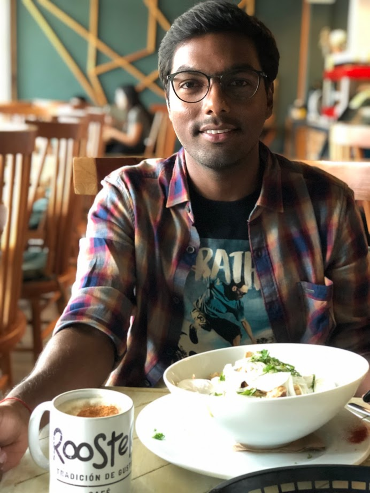
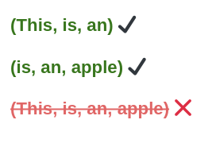
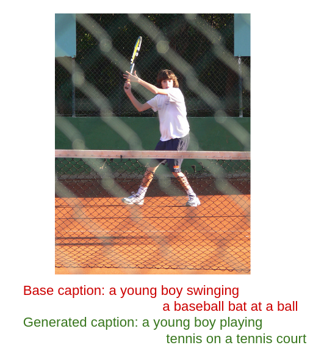
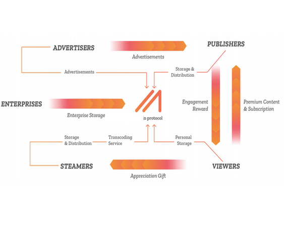

|
Sashank Gondala
sgondala@gatech.edu
I am a 2nd year Master's student in Computer Science (Specializing in Machine Learning)
at Georgia Tech where I primarily work with Prof. Dhruv Batra, and Prof. Devi Parikh. For the summers of 2020, I worked as
a Machine Learning Intern in the Language Modeling team at Apple.
In a past life, I heavily worked on Systems. I was a Senior Software Developer for 3
years at Oracle, where I worked on speeding up Oracle Analytics Platform, a C++ query engine. I
also co-founded a startup to deliver a Decentralized
CDN over blockchain. Though it didn't take off as expected, it was pretty exciting to work on!
I earned a Bachelor's degree in Computer Science in 2016 from IIT Bombay.
In my spare time I enjoy reading books, cooking, and travel.
E-mail |
CV
|
LinkedIn |
Github |
Twitter
|

|
Research Interests
I’m interested in building intelligent agents that are capable of communicating with humans via natural language and are able to perform tasks. Towards this larger goal, I'm currently focusing on three main research directions
- Teaching via language - Currently, most learning-based robots are taught via hundreds of
demonstrations of a task. Humans, however, can be easily taught using natural language instructions. I am interested in using language as a medium of instructing and teaching robots.
- Vision and Language grounding - Most existing image captioning models require paired
training data - thousands of annotated examples to ground language tokens to visual concepts. If
we were to deploy robots that communicate with humans in natural language, they would have to
learn novel visual concepts without paired data.
- Language generation - Most language models still aren't semantically accurate
(GPT-2 writes about ‘fires happening under water’). I believe this is because current language models are text-only models, whereas human language understanding happens via visual and motor controls. I believe language models built using embodied signals will demonstrate better language understanding and are likely to produce semantically accurate sentences.
|
| 
|
Error-driven Pruning of Language Models for Virtual Assistants
Sashank Gondala*, Lyan Verwimp*, Ernest Pusateri, Manos Tsagkias, Christophe Van Gysel.
Keywords: ASR, Language Model Pruning, discriminative, data selection, error prediction.
Work done as a Research Intern at Apple. Under review at ICASSP
2021
|
| 
|
Test-time training for image captioning
Sashank Gondala, Rachel Zhong, Harsh Agarwal.
Worked on the idea of test-time training to improve performance of image captioning
models on test-time out-of-distribution data as measured by CIDEr-D metric. Modelled a CIDEr-D predictor
using ViLBERT which can be used to train captioning model using policy gradient at test time, to produce better
captions for test images. Project was scrapped due to poor generalization to out-of-distribution
images.
|
|
|
Vision & Language Navigation
Work under progress
Building models to better solve the task of Vision & Language Navigation in Continuous Environment.
|
| 
|
Decentralized CDN
Co-founded a startup to provide decentralized CDN services by sharing the spare
bandwidth and hard drive space of Internet users over blockchain. IP developed include a prototype to
support HLS video streams and a whitepaper that describes the challenges and solutions including Service Certificates, Probabilistic Micropayments, etc.
|
Academic Achievements
- Secured All India Rank 14 in IIT-JEE 2012 among 500,000 test-takers.
- Secured All India Rank 8 in Nationwide Education and Scholarship Test 2014 and was
awarded scholarship (Rs. 25,000/-) for the same.
- Was placed National Top 1% in several Astronomy, Physics, and Junior Science Olympiads
(2010-2012).
|
News
- Aug 2020 → Started serving as the Graduate Teaching Assistant for the CS7643 Deep
Learning.
- May 2020 → Started Summer internship at Apple, working on Siri Language
Understanding team.
- Jan 2020 → Started serving as the Graduate Teaching Assistant for the CS8803
Special Topics in Systems for Machine Learning.
- Aug 2019 → Started serving as a Graduate Teaching Assistant for the CS 7641 Machine learning
- Aug 2019 → Started my MS
degree in Computer Science at Georgia Tech.
- Aug 2018 → Promoted as a Senior Member of Technical Staff at Oracle.
- Jul 2016 → Started working as a Member of Technical Staff in the Oracle Analytics
team at Oracle.
- May 2016 → Graduated from IIT Bombay with a
Bachelor's degree in Computer Science.
|
Teaching
- Teaching Assistant → Deep Learning, Georgia Tech, Spring 2021 (Scheduled).
- Teaching Assistant → Deep Learning, Georgia Tech, Fall 2020.
- Teaching Assistant → Systems for Machine Learning Research, Georgia Tech, Spring
2020.
- Teaching Assistant → Machine Learning, Georgia Tech, Fall 2019.
- Teaching Assistant → Intro to Computer Programming, IIT Bombay, Spring 2016.
|
"The best way to predict the future is to invent it." ~ Alan Kay
Design inspired from here
|
|